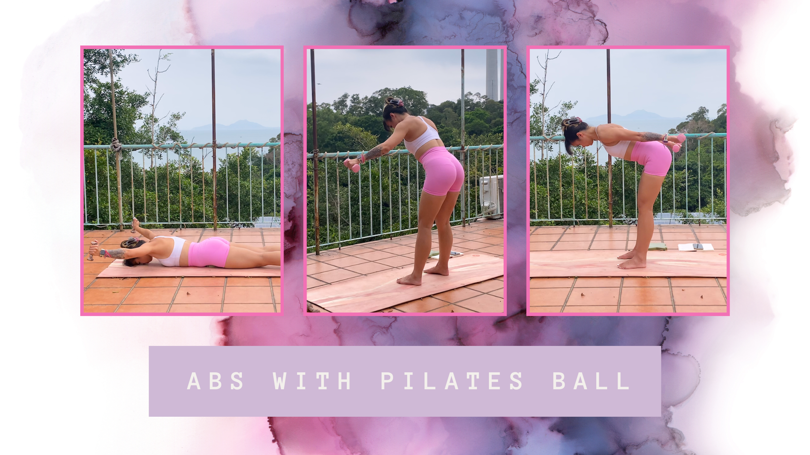

4 Exercises for hunched back posture
A 16 minute strength training workout targeting underactive muscles caused by hunched back posture.

With the ever-evolving technology, and upgraded devices to accompany this, it seems developing a hunched posture is inevitable.
Office jobs, driving and mobile phone usage seems to be the main culprit. All these activities keep the spine in a flexed (rounded) position for hours.
But how can we fight a consequence from something that is here to stay?
Through addressing and rectifying the bad habits that your body has adopted to counter these activities in everyday life.
What’s causing hunched back?
Bad daily habits are the main cause of a hunched back. This position is a combination of Shortened front muscles, and lengthened, weak back muscle.
A curved back is a muscular imbalance, and indicates:
- Tight, overactive chest muscles (pectorals)
- Anterior deltoids pull the shoulders forward and inward
- Weak, underactive upper back muscles (lower traps, rhomboids, and rear deltoids) cannot pull them back.
Workout Breakdown:
- Prone Y Raises
- Bent Over DB Pullover (Straight Arm) x3
- Lateral Raises x3
- Bent Over Lateral Raises (Reverse Flyes) x3
1. Prone Y Raises
The Kneeling Hip Stretch gently opens up the hip flexors, and returns your pelvis to its intended neutral position. This stretch can help relieve lower back pain and activate your glutes.
2. Bent Over DB Pullover (Straight Arm)
If you have tight or underactive glutes, this stretch is ideal! It loosens the deep gluteal muscles and the piriformis, which are important for good hip mobility.
3. Lateral Raises
Your thoracic spine is responsible for your posture and shoulder blade retraction. The Seated Spinal Twist can relieve tension in your traps that’s caused from day-to-day physical activity.
4. Bent Over Lateral Raises (Reverse Flyes)
The Seated Forward Fold is great for lengthening your entire posterior chain. This stretch targets all parts of your back and hamstrings. Releasing tension in this area can help with anterior pelvic tilt.